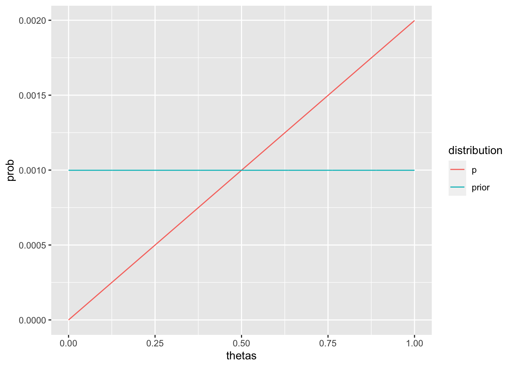
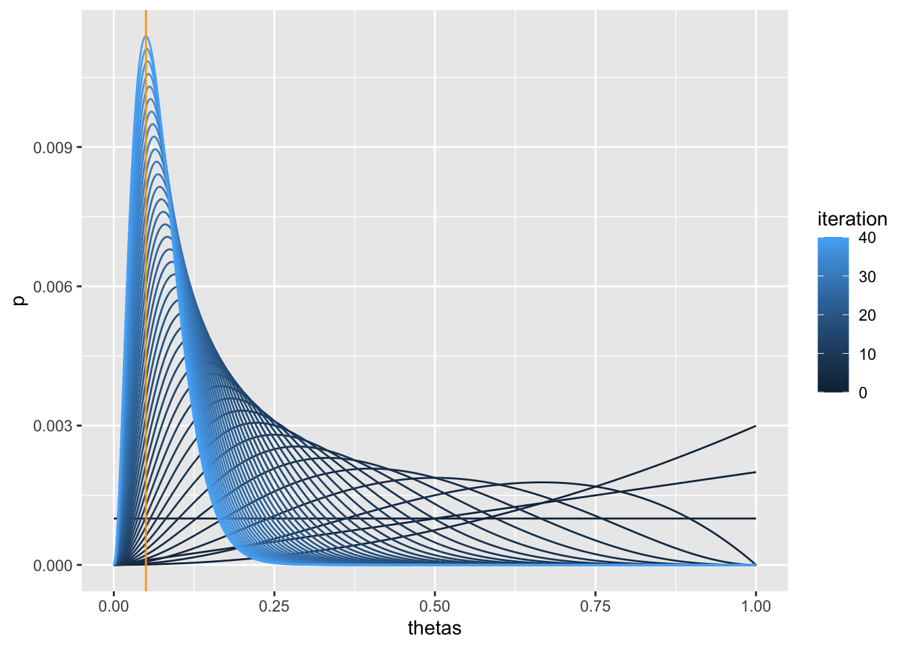

1.5 Rでの実装
前項の例におけるベイズ推論を実装してみよう．まず，\(\theta\)の取りうる値のベクトルを作成する．必ずしも1001分割でなければいけないわけではない．
\[ \tilde{\boldsymbol \theta} = (0, 0001, 0.002,\ldots,0.999, 1) \]
thetas <- seq(0, 1, length=1001)
thetas %>% head()## [1] 0.000 0.001 0.002 0.003 0.004 0.005次に，尤度関数を実装する．実現値\(r=1\)であればthetasを，\(r=0\)なら1-thetasを返す．
\[ p(\theta|r) = \theta^r (1-\theta)^{1-r} \]
likelihood <- function(r, thetas){
if(r){
return(thetas)
}else{
return(1-thetas)
}
}最後に事後分布を計算するposteriorを実装する．
\[ p(\theta|r) = 2\theta^r(1-\theta)^{1-r} \]
posterior <- function(r, prior, thetas){
lp = likelihood(r, thetas) * prior
return(lp / sum(lp)) # 尤度関数と事前分布の積をその和で割って正規化しておく
}ベイズ推論を行う前に，事前分布を作成しておこう．事前分布は一様分布としていたので以下のようになる．
prior <- rep(1/length(thetas), length(thetas))ではベイズ推論を実行する．
p <- posterior(r=1, prior, thetas)
tibble(thetas=thetas, p=p, prior=prior) %>%
pivot_longer(cols=c(p,prior), names_to="distribution", values_to="prob") %>%
ggplot(aes(x=thetas, y=prob,
group=distribution, color=distribution)) +
geom_line()
さらに繰り返しベイズ推論を実行して変化を見てみよう．いま得られたデータとしてはクリックが2，でクリックなしが38だったので，この順番には意味がないとすれば以下のように実装できる．
len_n <- 1001
thetas <- seq(0,1,length=len_n)
click = c(rep(1,2), rep(0, 38))
p <- rep(1/len_n, len_n)
results <- tibble(
thetas=thetas,
p=p,
iteration=0
)
for(i in 1:length(click)){
r <- click[i]
p <- posterior(r=r, prior=p, thetas=thetas)
results <- bind_rows(
results,
tibble(
thetas=thetas,
p=p,
iteration=i
)
)
}事後分布の変化の様子をプロットしてみよう．
max_value <- results %>%
dplyr::filter(iteration==max(iteration),
p==max(p)) %>%
pull(thetas)
results %>%
ggplot(aes(x=thetas, y=p, group=iteration, color=iteration)) +
geom_line() +
geom_vline(xintercept=max_value, color="orange")

Figure 1.5: ベイズ推論の繰り返しによる事後分布の変遷
最終的には0.05付近に最も大きな値をもつ事後分布が得られていることがわかる（黄色の縦線）．